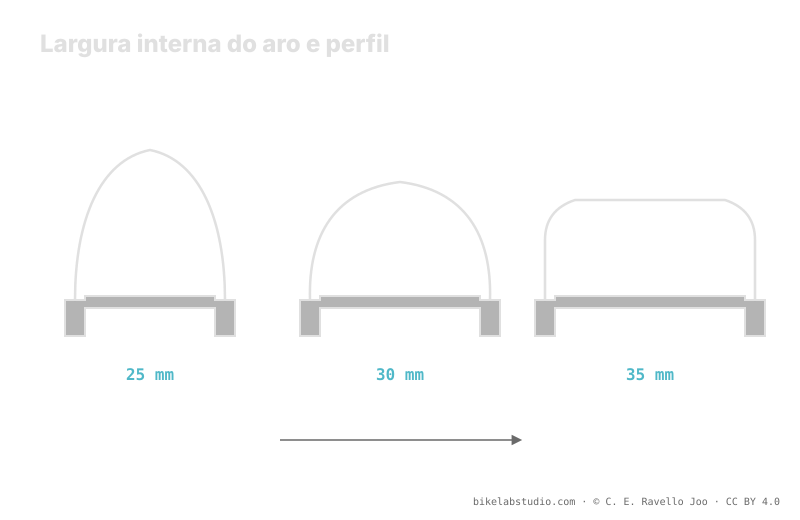

A largura interna do aro (IRW) —a distância entre as paredes internas do aro— decide como o pneu se abre: um aro estreito o deixa redondo, um aro largo o abre para um perfil quadrado e mais largo. Ao mudar a forma e a largura real, move o volume, a faixa de pressão e o apoio lateral nas curvas. As categorias 25, 30 e 35 mm são apenas etiquetas de referência. A pressão não é um número, e o valor exato é fechado pela calculadora.
O pneu não existe sozinho: existe montado sobre um aro. Esse aro, e em concreto sua largura interna, muda a forma que o pneu assume, sua largura real e quanto o talão aguenta num apoio forte. Ignorar isso é medir o pneu pela etiqueta e não pelo que de fato você tem embaixo.
Pare de adivinhar: a Calculadora de Pressão PSI te dá sua faixa (não um número) contando sua largura interna de aro, pneu, peso e disciplina. ▶ Abrir a calculadora PSI
A largura interna é a distância entre as duas paredes internas do aro, ali onde apoiam os talões do pneu. Não confunda com a largura externa do aro nem com a largura impressa no flanco do pneu. É o número que governa como os talões se afastam ao montar: quanto maior a largura interna, mais longe um fica do outro e mais o pneu se abre. Por isso duas rodas com o mesmo pneu, mas largura interna de aro diferente, não carregam, na prática, o mesmo pneu.

A largura interna não é um dado sobrando: é a variável que decide qual forma seu pneu realmente tem antes de colocar uma única unidade de pressão.
Num aro estreito os talões ficam juntos e o pneu se fecha para cima: um perfil redondo, mais alto e estreito, com a banda de rodagem curvada. Num aro largo os talões se afastam e o pneu se abre: um perfil quadrado, mais baixo e largo, com a banda mais plana e os cravos laterais mais expostos e disponíveis ao inclinar. O mesmo modelo de pneu muda de personalidade conforme o aro em que vive: mudam sua largura real, seu volume e a forma como morde o solo.
Se o aro largo abre o pneu, aumenta sua largura e volume reais e apoia melhor o talão: há mais ar trabalhando e mais apoio lateral, então esse conjunto costuma admitir um pouco menos de pressão para a mesma sensação. Um aro estreito, com o pneu mais redondo e menos aberto, tende a pedir um pouco mais para não dobrar o flanco. Não é um salto para um número novo: a largura interna desloca a faixa, igual ao que fazem o peso ou a largura do próprio pneu. O valor concreto sai de olhar todos juntos.
Quando você inclina numa curva, o flanco do pneu trabalha em torção e o talão tende a se deformar para dentro. Uma largura interna maior afasta os pontos de apoio do talão e lhe dá uma base mais firme, de modo que o pneu dobra menos no apoio forte e a sensação é mais estável. Esse apoio extra é parte da razão pela qual, com um aro largo, muitos baixam um pouco a pressão sem sentir que o pneu escapa lateralmente. Com um aro estreito, essa mesma pressão baixa fica mais esponjosa e o flanco pede ajuda com um pouco mais de ar.
Para se orientar sem inventar valores de pressão, pense a largura interna em três etiquetas. Em torno de 25 mm: aro estreito, pensado para pneus de menor volume, perfil mais redondo. Perto de 30 mm: o meio-termo hoje habitual no trail, bom equilíbrio entre forma e apoio. Perto de 35 mm: aro largo, para pneus largos e perfil quadrado, com mais apoio lateral. São apenas categorias para situar para onde seu aro empurra o perfil e a faixa de pressão; não são valores de pressão, e sua combinação exata é afinada pela calculadora.
A distância entre as paredes internas do aro, onde apoiam os talões. Não é a largura externa nem a largura do pneu: decide quanto o pneu se abre ao ser montado.
Aro estreito junta os talões e deixa o pneu redondo; aro largo os afasta e o abre para um perfil quadrado, mais largo e com cravos laterais mais expostos.
Move a faixa. Um aro largo abre o pneu, sobe volume e apoio e costuma admitir um pouco menos; um aro estreito tende a pedir um pouco mais. O número exato vem da calculadora.
Etiquetas de largura interna: 25 estreito, 30 meio de trail, 35 largo. Orientam para onde vai o perfil e a faixa, não são valores de pressão.
O aro move sua faixa; a Calculadora de Pressão PSI a fecha por roda contando largura interna, pneu, peso e disciplina. ▶ Abrir a calculadora PSI
© 2026 BikeLab Studio. Conteúdo sob CC BY 4.0: você pode copiar, traduzir e publicar, inclusive com fins comerciais. A citação é obrigatória. Sem atribuição, a licença é revogada automaticamente (CC BY 4.0, §6.a) e o uso passa a ser violação de direitos autorais: solicitamos a retirada do conteúdo e sua desindexação. · Design e propriedade: Carlos Ravello Joo